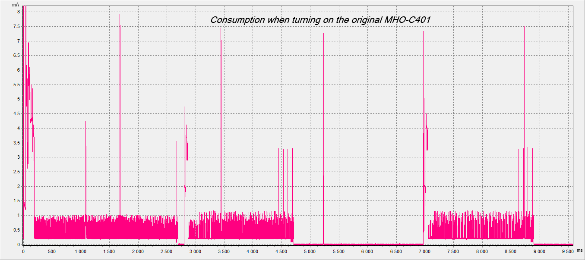
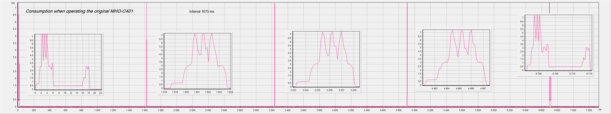
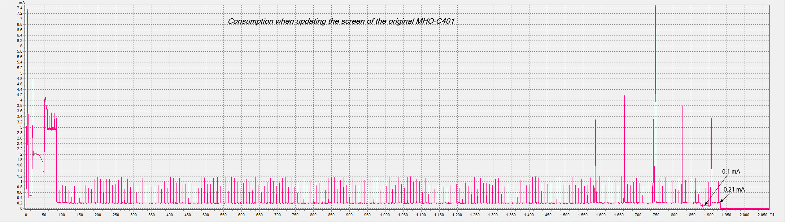
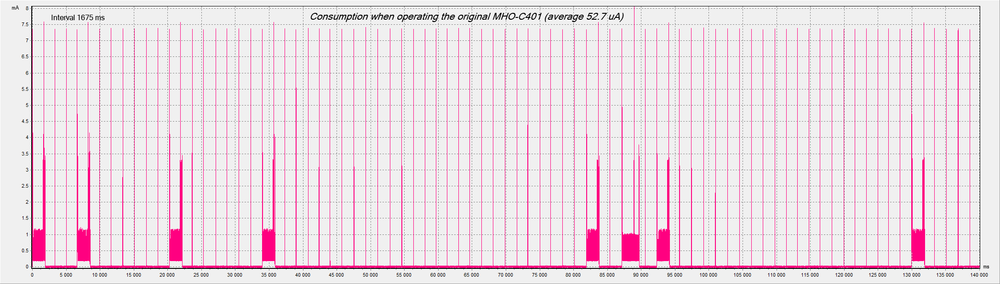
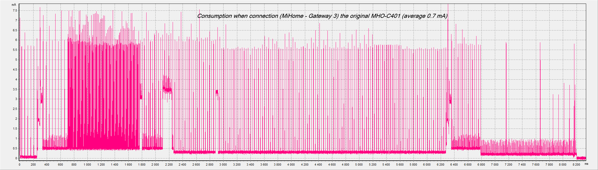
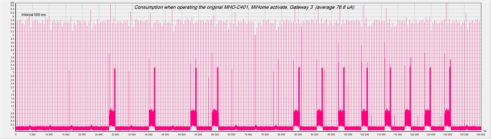
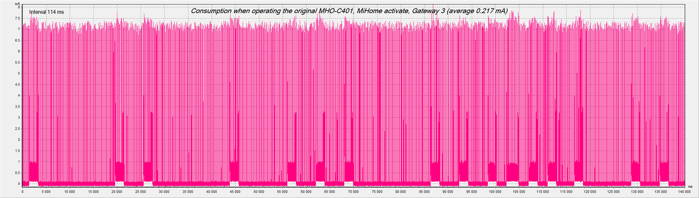

Power Consumption Xiaomi Mijia BLE MHO-C401 (E-ink)
Потребление по старту питания:

Далее идет реклама с интервалом примерно 1675 ms. Каждый 4-й интервал производится снятие показаний с датчика SHTV3:

и это чередуется с обновлениями экрана при изменении значений с датчика:

Если не активировать устройство в MiHome, то получаем примерно такую картину потребления - средний ток около 50 uA и зависит от частоты смены изображения по изменению значений с датчика:

Но, если активировать устройство в MiHome, тогда по питанию творится что-то невообразимое. Жрет как лошадь. ПО от Xiaomi пытается убить батарейку CR2032 за две недели!
Потребление при соединения когда включаем просмотр значений в телефоне (среднее 0.7 мА, время соединения для запроса значений 8.2 сек):

В дальнейшем происходят такие варианты:
1. Меняются интервалы на 500 ms и потребление уходит за 76 uA:

2. Меняются интервалы на 114 ms и потребление уходит за 0.21 mA:

И так всё чередуется от пожеланий разработчиков в Xiaomi.
Замеры произведены при использовании шлюза Xiaomi Gateway 3.
PS: Не зря в комплекте 2 батарейки...